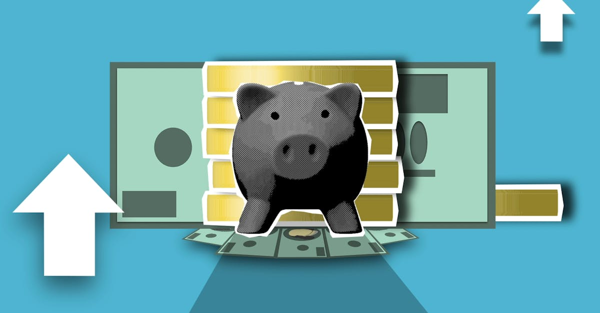

Le Bitcoin entre dans une phase d'expansion haussière
Le marché des cryptomonnaies est en ébullition. Le Bitcoin (BTC), la reine des crypto-actifs, semble avoir franchi une étape décisive, entrant dans ce que les analystes techniques qualifient de phase d'expansion d'un schéma de retournement haussier classique. Ce schéma, souvent observé lors des cycles de marché, suggère une potentielle continuation de la dynamique positive qui pourrait propulser le prix du BTC vers des sommets inédits, avec des objectifs audacieux fixés autour des 90 000 dollars. Cette perspective suscite un intérêt renouvelé tant chez les investisseurs institutionnels que chez les traders particuliers, tous scrutant les indicateurs pour anticiper la prochaine grande vague haussière. L'importance de comprendre ces dynamiques de marché, notamment l'influence des grands acteurs, est primordiale pour naviguer avec succès dans cet environnement volatil. Les mouvements récents indiquent une force sous-jacente considérable, alimentée par une demande accrue et une offre qui se raréfie, des conditions idéales pour une appréciation significative du prix. La période actuelle pourrait marquer un tournant majeur pour Bitcoin, validant les prédictions les plus optimistes et renforçant sa position en tant qu'actif d'investissement majeur.
👉 À lire : Tether: 70M$ de Bitcoin en plus, ses réserves dépassent 97 000 BTC
L'accumulation massive des baleines : un signe avant-coureur
Au cœur de cette dynamique haussière se trouve un acteur clé : les baleines, ces détenteurs de quantités massives de Bitcoin. Les données récentes révèlent une accumulation spectaculaire de la part de ces gros portefeuilles au cours des trente derniers jours. En effet, on estime que les baleines ont absorbé l'équivalent de 20 fois l'offre quotidienne de Bitcoin sur cette période. Cette absorption massive, qui se traduit par une réduction significative des BTC disponibles à la vente sur les plateformes d'échange, est un signal extrêmement haussier. Elle démontre une confiance accrue dans la valeur future de l'actif et une volonté de sécuriser des positions avant une potentielle flambée des prix. L'effet combiné d'une demande soutenue et d'une offre restreinte crée un déséquilibre qui, selon les principes économiques fondamentaux, tend à faire monter les prix. Pour les traders, observer et comprendre le comportement des baleines est une stratégie essentielle. Les outils d'analyse on-chain permettent de suivre ces mouvements, offrant des aperçus précieux sur les intentions des grands acteurs et aidant à affiner les stratégies de trading pour mieux capter les opportunités générées par ces accumulations. Cette concentration d'achat par les détenteurs importants valide la tendance haussière actuelle et renforce la crédibilité des prévisions de prix ambitieuses.
👉 À lire : Bitcoin face aux 75 000 $ : Plafond ou Tremplin pour l'IA Crypto ?
Analyse technique : le schéma de retournement haussier
Le mouvement actuel du Bitcoin s'inscrit dans un schéma technique bien connu : le creux arrondi (ou cup and handle en anglais). Ce modèle, qui se forme sur de longues périodes, est considéré comme l'un des indicateurs de retournement haussier les plus fiables. Il se caractérise par une phase de baisse prolongée (la "tasse"), suivie d'une période de consolidation latérale (la "poignée"), avant une cassure franche à la hausse. La phase actuelle semble correspondre à la sortie de cette "poignée", signalant la fin de la consolidation et le début d'une nouvelle tendance ascendante. La rupture des niveaux de résistance clés, observée récemment, confirme la validité de ce schéma et ouvre la voie à une poursuite de la hausse. Les volumes de transaction lors de cette cassure sont également un facteur important à surveiller ; des volumes élevés accompagnant la rupture valident la force du mouvement. Les indicateurs techniques tels que le RSI (Relative Strength Index) et les moyennes mobiles corroborent également cette vision positive, montrant une dynamique haussière soutenue. Comprendre ces figures chartistes est fondamental pour anticiper les mouvements du marché. Pour ceux qui utilisent des stratégies de trading automatisées, l'intégration de ces signaux techniques dans les algorithmes peut améliorer significativement la performance. L'objectif de 90 000 $ n'est donc pas une simple spéculation, mais une projection basée sur des patterns établis et une accumulation significative.

L'impact des facteurs macroéconomiques et institutionnels
Au-delà de l'analyse technique et des mouvements des baleines, plusieurs facteurs macroéconomiques et l'intérêt croissant des institutions jouent un rôle crucial dans l'ascension du Bitcoin. L'inflation persistante dans de nombreuses économies mondiales pousse les investisseurs à chercher des actifs refuges ou des alternatives de diversification. Dans ce contexte, le Bitcoin, souvent comparé à un "or numérique", gagne en attractivité. L'approbation récente des ETF Bitcoin au comptant par la SEC américaine a ouvert la porte à des flux d'investissement institutionnel considérables. Ces produits financiers permettent aux fonds d'investissement, aux gestionnaires d'actifs et même aux investisseurs particuliers via des comptes traditionnels, d'exposer facilement leur portefeuille au Bitcoin sans avoir à gérer directement la cryptomonnaie. Les chiffres montrent que ces ETF attirent des milliards de dollars, injectant une liquidité nouvelle et significative sur le marché. Cette adoption institutionnelle confère une légitimité accrue au Bitcoin et contribue à stabiliser sa volatilité à long terme. L'effet combiné de la politique monétaire accommodante de certaines banques centrales et de la demande institutionnelle crée un environnement propice à une appréciation durable du prix. Les stratégies de trading doivent donc tenir compte de ces influences externes qui façonnent le sentiment général du marché et la perception du Bitcoin comme une classe d'actifs à part entière.
Le rôle de l'innovation et de l'écosystème Bitcoin
L'écosystème Bitcoin ne cesse d'évoluer, et cette innovation constante renforce son attrait et sa valeur intrinsèque. Des développements tels que le Lightning Network continuent d'améliorer la scalabilité et la vitesse des transactions, rendant le Bitcoin plus pratique pour les paiements du quotidien. Bien que le prix du Bitcoin soit souvent influencé par des facteurs spéculatifs et des cycles de marché, sa technologie sous-jacente et son utilité potentielle restent des moteurs de croissance à long terme. L'adoption croissante par les entreprises, l'intégration dans les systèmes de paiement et le développement d'applications décentralisées (dApps) sur des couches supérieures contribuent à élargir l'utilité du réseau Bitcoin. De plus, la sécurité éprouvée de son réseau blockchain et sa nature décentralisée en font un actif résilient face aux censures et aux défaillances centralisées. Pour les professionnels du trading, comprendre l'impact de ces innovations sur l'adoption et l'utilité du Bitcoin est essentiel. Les algorithmes de trading, par exemple, peuvent être conçus pour réagir à des annonces de développement technologique ou à des indicateurs d'adoption, permettant de capitaliser sur ces tendances de fond. L'optimisation continue de l'infrastructure et l'expansion de l'écosystème sont des catalyseurs silencieux mais puissants de la valeur future de Bitcoin.
Les risques et la gestion de portefeuille à l'ère de l'IA
Malgré les perspectives extrêmement positives, il est crucial de rappeler que le marché des cryptomonnaies demeure intrinsèquement volatil et comporte des risques significatifs. La projection de 90 000 $ pour le Bitcoin, bien que plausible, n'est pas garantie. Des événements imprévus, des changements réglementaires soudains ou des retournements de sentiment du marché peuvent entraîner des corrections rapides et importantes. La gestion des risques devient donc une priorité absolue pour tout investisseur ou trader. Dans ce contexte, l'avènement des agents IA spécialisés dans le trading de cryptomonnaies offre de nouvelles perspectives. Ces outils, capables d'analyser en temps réel des volumes massifs de données – incluant les mouvements de prix, les données on-chain, les actualités et même le sentiment des réseaux sociaux – peuvent identifier des opportunités et exécuter des transactions avec une vitesse et une précision inégalées. Un agent IA peut non seulement suivre les tendances haussières comme celle du Bitcoin, mais aussi gérer activement le risque en ajustant les stop-loss, en diversifiant les positions ou en réagissant instantanément aux nouvelles informations. L'intégration de l'IA dans le trading permet une approche plus objective et disciplinée, débarrassée des biais émotionnels qui affectent souvent les décisions humaines. La combinaison d'une analyse approfondie du marché et de l'exécution automatisée par l'IA représente une stratégie puissante pour naviguer dans la complexité et la volatilité du marché crypto, particulièrement lors de phases d'expansion comme celle que connaît actuellement le Bitcoin.
Conclusion : Naviguer vers les 90 000 $ avec stratégie
Le Bitcoin se positionne clairement pour une nouvelle phase haussière significative, avec un objectif de 90 000 $ qui semble de plus en plus atteignable. L'accumulation agressive par les baleines, la confirmation d'un schéma de retournement haussier classique, l'afflux d'investissements institutionnels et l'innovation continue au sein de l'écosystème convergent pour soutenir cette trajectoire positive. Cependant, la prudence reste de mise. La volatilité inhérente au marché des cryptomonnaies exige une gestion rigoureuse des risques et une stratégie d'investissement bien définie. Pour les traders cherchant à maximiser leurs gains tout en minimisant les pertes potentielles, l'adoption d'outils avancés est devenue indispensable. Les agents IA spécialisés dans le trading de cryptomonnaies offrent une solution de pointe, capable d'analyser les tendances complexes, d'identifier les opportunités dès leur apparition et d'exécuter des transactions 24h/24, 7j/7, avec une précision redoutable. En exploitant la puissance de l'intelligence artificielle, vous pouvez non seulement suivre la progression du Bitcoin vers de nouveaux sommets, mais aussi naviguer dans le marché avec une confiance accrue, en tirant parti des fluctuations et en restant à l'avant-garde des opportunités. L'ère du trading crypto intelligent est là, et elle est propulsée par l'IA.